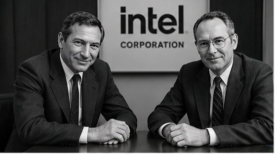

Intel Founded
Robert Noyce and Gordon Moore founded Intel Corporation, laying the foundation for decades of innovation and future sustainability leadership.
Intel quickly became a leader in semiconductor innovation, helping shape the future of personal computing and global technology.